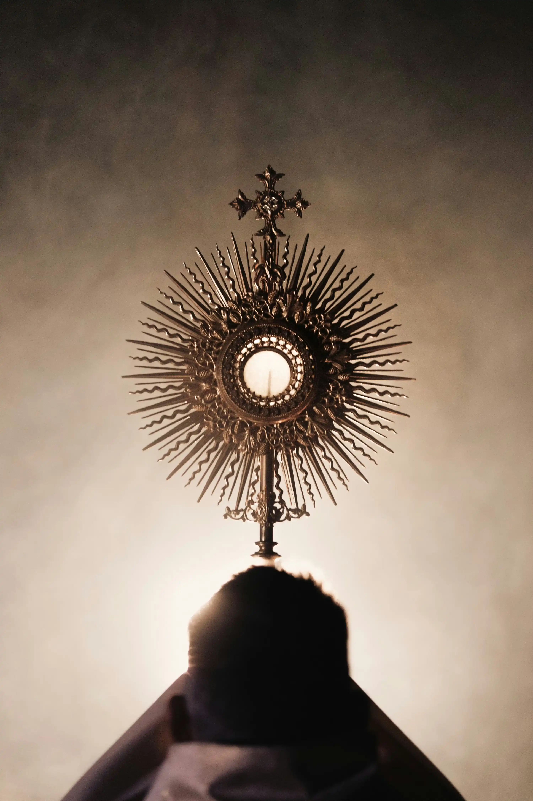
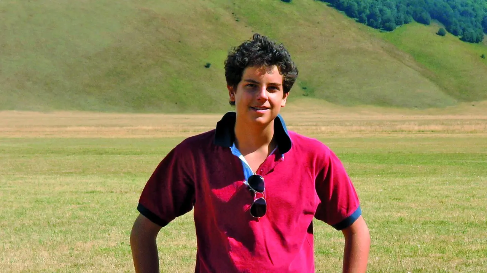
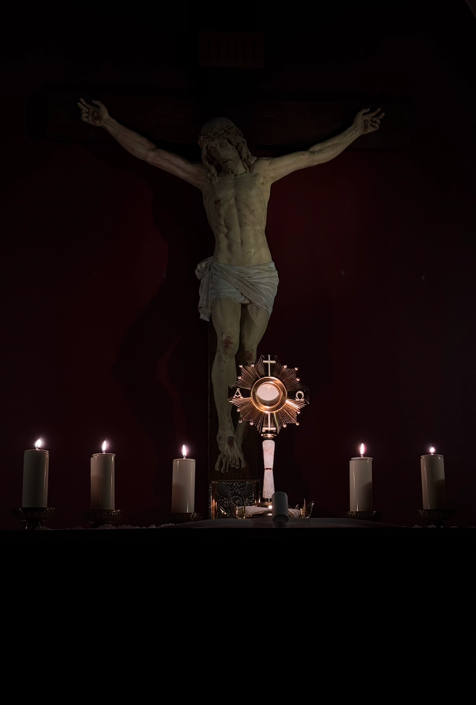

No sabemos bien cómo explicarlo.
Pero quien va, vuelve.
Iglesia Joven es el rostro joven de la Iglesia Católica. No somos un movimiento juvenil independiente ni una pastoral paralela — somos parte de la misma Iglesia que es Una, Santa, Católica y Apostólica.
El centro de todo lo que hacemos es la Eucaristía. Organizamos Adoraciones Eucarísticas mensuales para que los jóvenes se encuentren con Jesús en el Sacramento del altar.
Actualmente crecemos desde la Parroquia San Rafael Arcángel de Escazú, pero Iglesia Joven es un rostro que puede florecer en cualquier comunidad y parroquia — porque somos la Iglesia, y la Iglesia está en todas partes.


"Cuanto más recibimos la Eucaristía, más nos parecemos a Jesús."
Carlo era un chico italiano normal — amaba los videojuegos, el fútbol y sus amigos. Pero también iba a Misa todos los días y pasaba horas en adoración eucarística. Murió de leucemia a los 15 años, ofreciendo su sufrimiento por el Papa y por la Iglesia.
En 2020, el Papa Francisco lo beatificó. Hoy es conocido como el "influencer de Dios" — un joven que usó internet para llevar a otros a la Eucaristía. Exactamente lo que intentamos hacer nosotros.
En cada Santa Misa, el pan y el vino se convierten realmente en el Cuerpo y la Sangre de Jesucristo. No de manera simbólica. Real, verdadera y sustancialmente.
Llamamos "transubstanciación" al momento en que el pan se convierte completamente en Cristo — su cuerpo, su sangre, su alma, su divinidad. No queda nada de pan.
En la Eucaristía, Jesús no manda un representante. Se entrega Él mismo, igual que lo hizo en la Cruz. Cada Misa es el Calvario hecho presente hoy.
La Iglesia la llama "fuente y cima" de la vida cristiana. No hay nada más grande que recibir a Cristo o estar en su presencia en la Eucaristía.
"El que come mi carne y bebe mi sangre tiene vida eterna."— Jesús · Juan 6:54
Una hora entera frente a Jesús en el Santísimo Sacramento. Sin agenda. Sin prisa. Solo tú y Él.
Dejas el ruido afuera. El espacio es tuyo. No hay nada que hacer, nada que demostrar. Solo llegar.
La Custodia está en el altar. Dentro de esa hostia está Jesús — esperándote, mirándote.
Hay música, hay silencio. Hay oraciones guiadas y momentos para simplemente hablar con Él.
No sabemos explicarlo bien. Pero quien va, vuelve. Algo pasa en esa hora que no pasa en ningún otro lugar.

"El tiempo pasado en adoración es el más provechoso de nuestra vida."— San Juan Vianney
Parroquia San Rafael Arcángel · Escazú, Costa Rica · 7:00 PM